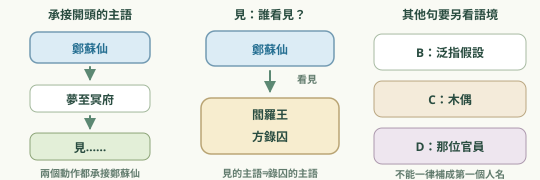
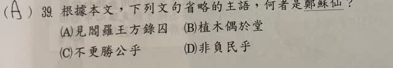
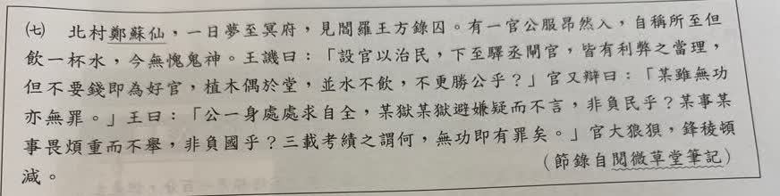
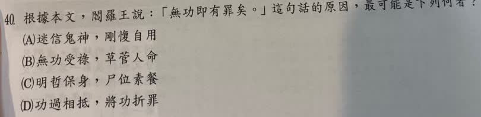

完整原題
作答所需文章／材料
北村鄭蘇仙，一日夢至冥府，見閻羅王方錄囚。有一官公服昂然入，自稱所至但飲一杯水，今無愧鬼神。王譏曰：「設官以治民，下至驛丞閘官，皆有利弊之當理，但不要錢即為好官，植木偶於堂，並水不飲，不更勝公乎？」官又辯曰：「某雖無功亦無罪。」王曰：「公一身處處求自全，某獄某獄避嫌疑而不言，非負民乎？某事某事畏煩重而不舉，非負國乎？三載考績之謂何，無功即有罪矣。」官大狼狽，鋒稜頓減。 ——節錄自《閱微草堂筆記》國文第39題｜省略主語與敘事視角
國文第40題｜無功即有罪的任官責任
先想一想，再查看答案、解說與原圖
國文第39題｜省略主語與敘事視角
分享原卷｜第39題 · 對話建立日期（Created） 2026-08-20 · 原AI對話 ↗
逐項解析
| 選項與原句 | 判讀 | 句意與判斷理由 |
|---|---|---|
| (A) 見閻羅王方錄囚 | 應選 | 承接鄭蘇仙夢至冥府，省略主語仍是鄭蘇仙。 |
| (B) 植木偶於堂 | 不選 | 是假設在堂上擺木偶的泛指行為，不是敘述鄭蘇仙。 |
| (C) 不更勝公乎 | 不選 | 意為木偶豈不比這位官員更好，比較主體是木偶。 |
| (D) 非負民乎 | 不選 | 責問的是一味自保、不肯任事的官員，不是鄭蘇仙。 |
詳細說明與解題步驟
【全段白話】
北村的鄭蘇仙有一天夢到冥府，看見閻羅王正在登記審理囚犯。有一位官員穿著官服，神氣昂揚地進來，自稱任官到各地都只喝一杯清水，對鬼神問心無愧。
閻羅王譏諷說：「設官是為了治理百姓，下至驛站、閘口的小官，也都有應興辦的利益、應革除的弊害。如果只要不收錢就是好官，在堂上擺個木偶，連水也不喝，豈不比你更好？」
官員又辯解自己雖沒有功勞，也沒犯錯。閻羅王說：「你一輩子處處只求保全自己。某些案件怕招嫌疑而不肯說話，難道不是辜負百姓？某些事怕繁重而不肯辦，難道不是辜負國家？每三年考核官員政績是為了什麼？沒有盡責作為，本身就是罪過。」官員十分狼狽，剛來時的氣焰頓時消退。
【逐句補回誰做這個動作】
開頭「北村鄭蘇仙，一日夢至冥府，見閻羅王方錄囚」，連續敘述的主語都是鄭蘇仙，所以A是「鄭蘇仙看見閻羅王正在錄囚」。
B植木偶於堂是閻羅王舉的假設，意為若人們在堂上放木偶，不是鄭蘇仙實際去立木偶。C不更勝公乎的比較主體是木偶；D非負民乎責備的是那位官員。不要把整段中每個沒寫人名的動作都指向文章第一個人物。

① 夢至、見，承接同一個主語
開頭先寫「北村鄭蘇仙」，後面的夢至冥府、見閻羅王方錄囚，連續敘述他的夢中所見。省略的主語仍是鄭蘇仙。
② 看見的是鄭蘇仙，錄囚另有主語
補完整就是「鄭蘇仙看見閻羅王正在錄囚」。題目A問的是見的主語，不是錄囚的主語；不能因閻羅王靠得近，就把他當答案。
③ 假設、比較、責問，各查指涉
B是在堂上放木偶的假設，不是鄭蘇仙真去放；C拿木偶和官員比較；D則責問那位官員是否辜負百姓，主語都不能一律補成鄭蘇仙。
④ 找準動作，補回看見的是鄭蘇仙
答案 A：見閻羅王方錄囚
- 夢至冥府、看見：鄭蘇仙。
- 正在錄囚：閻羅王。
- B是假設放木偶；C比較的是木偶。
- 非負民乎責備的是官員，不是旁觀者。
核對註記：已依原卷或完整文字核對並獨立解題；對應教材課次未確認，歸綜合。
原圖（僅本題）


國文第40題｜無功即有罪的任官責任
分享原卷｜第40題 · 對話建立日期（Created） 2026-08-20 · 原AI對話 ↗
逐項解析
| 選項與原句 | 判讀 | 句意與判斷理由 |
|---|---|---|
| (A) 迷信鬼神，剛愎自用 | 不選 | 無愧鬼神是自稱問心無愧，本文並未以迷信或固執作為主要批評。 |
| (B) 無功受祿，草菅人命 | 不選 | 占位不任事與無功受祿有關，但沒有濫殺或輕賤人命的情節。 |
| (C) 明哲保身，尸位素餐 | 應選 | 一身求自全對應自保，畏避不言不舉對應占職而不盡責。 |
| (D) 功過相抵，將功折罪 | 不選 | 文中正說他沒有功績，不能用不存在的功勞折抵罪過。 |
詳細說明與解題步驟
【全段白話】
北村的鄭蘇仙有一天夢到冥府，看見閻羅王正在登記審理囚犯。有一位官員穿著官服，神氣昂揚地進來，自稱任官到各地都只喝一杯清水，對鬼神問心無愧。
閻羅王譏諷說：「設官是為了治理百姓，下至驛站、閘口的小官，也都有應興辦的利益、應革除的弊害。如果只要不收錢就是好官，在堂上擺個木偶，連水也不喝，豈不比你更好？」
官員又辯解自己雖沒有功勞，也沒犯錯。閻羅王說：「你一輩子處處只求保全自己。某些案件怕招嫌疑而不肯說話，難道不是辜負百姓？某些事怕繁重而不肯辦，難道不是辜負國家？每三年考核官員政績是為了什麼？沒有盡責作為，本身就是罪過。」官員十分狼狽，剛來時的氣焰頓時消退。
【從無功的具體表現推論原因】
官員怕嫌疑而不言、怕繁重而不舉，只求自身安全，這是本題語境中的明哲保身；占著職位卻不盡應辦事務的責任，就是尸位素餐，故選C。
本文不是說所有未獲重大功勳的官員都有罪，而是針對應負責任卻消極不作為的人。清廉不收錢固然重要，仍須履行職責。「無功」在這裡是沒有盡責作為，並不是「不收錢」的同義詞；原AI把兩者括註在一起，容易混淆，應分開理解。
文中沒有官員濫殺人命的行為，不能選B草菅人命；也沒有可抵罪的功勞，不能說將功折罪。
① 官員自稱清廉，還不等於已盡職責
官員以只喝一杯水自稱清廉，卻沒有說自己辦成哪些應辦事務。本文並未否定不收錢的重要，而是追問設官治理百姓，應盡的責任是否有履行。清廉與盡責，要分開檢查。
② 避嫌疑不言、畏煩重不辦，都是只求自全
怕惹嫌疑就不肯說，怕事情繁重就不肯做，才是文中無功的具體表現。官員只求自己安全，沒有承擔應有職責，對應本題明哲保身、尸位素餐，而非單純沒有獲得重大勳功。
③ 木偶比喻：不收錢，仍不等於好官
閻羅王用木偶連水都不喝作譏諷：若只以不收錢判好官，木偶豈不更好？圖是這個假設比喻，並非真的放木偶任官。無功指不盡責作為，不能和不收錢畫上等號。
④ 只求自保、占位不任事，才是本文無功的問題
答案 C：明哲保身，尸位素餐
- 本題的自保：怕嫌疑、怕繁重而不任事。
- 尸位素餐：占著職位，卻未盡應有職責。
- 本文無功不是不收錢，也未寫官員濫殺人命。
核對註記：已依原卷或完整文字核對並獨立解題；對應教材課次未確認，歸綜合。
原圖（僅本題）

